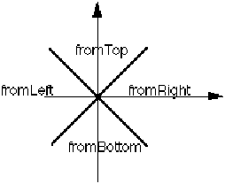

globalPortNameDef ::= nameDef
globalPortNameDisplay globalPortNameRef port portDelayNameDef portNameDef
GlobalPortNameDef is the name of a global port or global port bundle.
globalPortNameDisplay ::= '(' 'globalPortNameDisplay'
{ display | displayNameOverride }
')'
<schematicGlobalPortImplementation <schematicGlobalPortTemplate
displayName globalPort globalPortNameDef globalPortNameRef globalPortPropertyDisplay port portNameDisplay portNameGeneratorDisplay
GlobalPortNameDisplay is used to define display positions for a global port name.
globalPortNameRef ::= nameRef
!globalPortRef !globalPortScope
globalPort globalPortNameDef globalPortNameDisplay port portDelayNameRef portNameRef portRef
GlobalPortNameRef is a reference to a globalPortNameDef.
globalPortPropertyDisplay ::= '(' 'globalPortPropertyDisplay'
propertyNameRef
{ display | <propertyNameDisplay> }
')'
*schematicGlobalPortImplementation
globalPort globalPortNameDisplay port portPropertyDisplay portPropertyDisplayOverride property propertyDisplay
GlobalPortPropertyDisplay displays a property belonging to a global port or global port bundle.
globalPortRef ::= '(' 'globalPortRef'
globalPortNameRef
')'
!defaultConnection *globalPortList *portJoined !schematicGlobalPortImplementation *signalJoined
globalPort port portRef schematicGlobalPortImplementationRef schematicGlobalPortTemplateRef
GlobalPortRef is used to reference a globalPort.
(signal sigVCC1
(signalJoined
(globalPortRef VCCA) ...))
globalPortScope ::= '(' 'globalPortScope'
globalPortNameRef
')'
GlobalPortScope is used to scope a global port to a restricted subtree of an instance hierarchy. This is achieved by a reference to a global port from within a cluster configuration. This configuration of the cluster forms the top of the sub-tree of instances within which the global port referenced by globalPortNameRef is scoped. Any reference to this global port within this sub-tree, but not scoped within a smaller sub-tree, will be connected together and not connected to any other instances outside this sub-tree referencing the same global port.
The global port referenced by globalPortNameRef must not be a global port bundle.
If a global is intended to be connected throughout the design hierarchy, it must be scoped in the top cluster configuration - this is not assumed.
(globalPort VCCA)
...
(library libA
(libraryHeader ...)
(cell cellA ...
(cluster C1 ...
(schematicView view1
(schematicViewHeader ...)
(logicalConnectivity ...
(signal sigVCC
(signalJoined
(globalPortRef VCCA) ... ))
...)
(schematicImplementation ...))
(clusterConfiguration CONFIGA
(viewRef view1) ...) ...) ...)
(cell cellB ...
(cluster C1 (interface ...) ...
(schematicView view1
(schematicViewHeader ...)
(logicalConnectivity ...
(instance inst1
(clusterRef C1
(cellRef cellA)))
(instance inst2
(clusterRef C1
(cellRef cellA)))
(signal sigVCC1
(signalJoined
(globalPortRef VCCA) ...))
...)
(schematicImplementation ...))
(clusterConfiguration CONFIGB
(viewRef view1)
(globalPortScope VCCA) ...) ...) ...)
(cell cellX ...
(cluster C1 ...
(schematicView view1
(schematicViewHeader ...)
(logicalConnectivity ...
(instance inst1
(clusterRef C1 (cellRef cellB )))
(instance inst2
(clusterRef C1 (cellRef cellB ))) ...) ...)
(clusterConfiguration CONFIGX
(viewRef view1)
(instanceConfiguration inst1
(clusterConfigurationRef CONFIGB))
(instanceConfiguration inst2
(clusterConfigurationRef CONFIGB)))
...) ...) ...)
In this example, view1 in cluster C1 of cellA has a reference to VCCA. CellB has two instances of cluster C1 cellA, and a signal that references VCCA. This means that VCCA in the two instances of cellA will be connected to sigVCC1 in cellB.
Within cellX, there are two instances of cluster C1 cellB. However, the VCCA globals in these instances are not connected together because of the use of globalPortScope within CONFIGB.
This globalPortScope referring to global port VCCA indicates that within all instances below it in the instance hierarchy, globals connected to global port VCCA are connected together. This includes signal VCC1 in cellB (which refers to the same global port).
green ::= scaledInteger
Green represents the percentage of green in the color definition. The value must lie between 0 and 100 inclusive.
henry ::= '(' 'henry'
unitExponent
')'
Henry is used to specify a user-defined unit in terms of the SI inductance unit, henry. See unit for examples of the definition of units.
hertz ::= '(' 'hertz'
unitExponent
')'
Hertz is used to specify a user-defined unit in terms of the SI frequency unit, hertz. See unit for examples of the definition of units.
horizontal ::= '(' 'horizontal'
')'
horizontalJustification pcbDrawingBorderZonedGridSystemHorizontal pcbLinearDimensionHorizontal pcbTextAlignmentHorizontal
Specifies a horizontal direction.
horizontalJustification ::= '(' 'horizontalJustification'
( leftJustify | centerJustify | rightJustify )
')'
<displayAttributes <pcbDimensionDrawingAttributeOverride <pcbDrawingAttributeDefault <pcbDrawingTextDrawingAttributeOverride <pcbGeometricAttributeDefault <pcbTextAttributeOverride
HorizontalJustification defines how rendered text is horizontally positioned relative to the origin given in the display defined for the text. To justify text, the text bounding box is computed. Prior to rotation, the text is horizontally positioned so the X origin is at the left edge, center or right edge of the bounding box for leftJustify, centerJustify or rightJustify respectively.
If horizontalJustification is not specified, leftJustify is assumed.
(figureGroup small_text
(displayAttributes
(color 0 0 50)
(fontRef courier)
(horizontalJustification (leftJustify))
(verticalJustification (middleJustify))
(textHeight 160)) ...)
hotspot ::= '(' 'hotspot'
pointValue
{ <hotspotConnectDirection> | <hotspotNameDisplay> |
<nameInformation> | <schematicWireAffinity> }
')'
!ripperHotspot !schematicGlobalPortTemplate !schematicInterconnectTerminatorTemplate !schematicJunctionTemplate !schematicMasterPortTemplate !schematicOffPageConnectorTemplate !schematicOnPageConnectorTemplate !schematicSymbolPortTemplate
hotspotGrid hotspotNameCaseSensitive hotspotNameDef hotspotNameRef noHotspotGrid nominalHotspotGrid ripperHotspotRef
A hotspot defines a point to which connections of nets or busses may be made in a schematic. It has no inherent width, so a schematicNet or schematicBus of any width may be connected to a hotspot. However, schematicWireAffinity may be used as a guideline to specify what type of interconnect (specified by schematicWireStyle) a particular hotspot is to be connected to.
A hotspot cannot lie on an interconnect unless the hotspot point is coincident with one of the points in the point list of that interconnect.
(hotspot (pt 20 30))
This example illustrates a hotspot defined at position (pt 20 30).
hotspotConnectDirection ::= '(' 'hotspotConnectDirection'
{ <fromBottom> | <fromLeft> | <fromRight> | <fromTop> }
')'
HotspotConnectDirection defines the preferred direction of connections made to a hotspot.
The default value is (hotspotConnectDirection (fromBottom) (fromLeft) (fromRight) (fromTop)), meaning that connections may be made from any direction.
The preferred direction is defined in the coordinate space of the hotspot and would be transformed if the item containing the hotspot is transformed.
This attribute is for guidance of the CAD system only and it is not a semantic error if a connection is made to a hotspot from a direction that does not correspond with this attribute.
Each direction keyword represents a preference for a connection direction towards the center within the quadrant shown by the bold lines in the diagram below.

(hotspot ... (hotspotConnectDirection (fromTop)) ...)
In this example, the connection should be made to the top of the hotspot.
hotspotGrid ::= '(' 'hotspotGrid'
lengthValue
')'
hotspot noHotspotGrid nominalHotspotGrid
HotspotGrid specifies a grid on which all hotspots must lie, either directly or after instantiation.
It is a semantic error if a hotspot lies off grid, and therefore the reader can rely on this grid being adhered to, and the writer must ensure that a correct value is used. If there is no hotspot grid, then noHotspotGrid is used instead.
(schematicUnits
(schematicMetric
(setDistance (unitRef mm_10))
(hotspotGrid 10)))
In this example, all hotspots will lie at points with x and y coordinates exactly divisible by 10.
hotspotNameCaseSensitive ::= '(' 'hotspotNameCaseSensitive'
booleanToken
')'
clusterNameCaseSensitive designNameCaseSensitive documentationNameCaseSensitive frameNameCaseSensitive hotspot implementationNameCaseSensitive instanceNameCaseSensitive interconnectNameCaseSensitive libraryNameCaseSensitive pageNameCaseSensitive parameterNameCaseSensitive portNameCaseSensitive propertyNameCaseSensitive signalNameCaseSensitive viewNameCaseSensitive
HotspotNameCaseSensitive defines whether or not the strings contained within nameInformation for hotspots are to be considered as case sensitive. Following normal precedence rules, this applies to the entire EDIF data if this form occurs in edifHeader, or to the entire library if it occurs in libraryHeader. The default is that names are case sensitive.
See clusterNameCaseSensitive for an example.
hotspotNameDef ::= nameDef
HotspotNameDef defines the name of a hotspot. This is used when an object has more than one hotspot, to identify each hotspot.
hotspotNameDisplay ::= '(' 'hotspotNameDisplay'
{ display | displayNameOverride }
')'
HotspotNameDisplay displays the name of a named hotspot.
hotspotNameRef ::= nameRef
HotspotNameRef is a reference to a hotspotNameDef.
hourNumber ::= integerToken
!time
HourNumber represents a number of hours within timeStamp. Its value must be a minimum of 0 and maximum of 23.
alpha | '&' | '_'
{ alpha | digit | '_' }
k1KeywordNameDef k1KeywordNameRef k2FormalNameDef k2FormalNameRef *k2Literal nameDef nameRef *userData userDataTag
Identifier is a basic token type; it is used for name definition, name reference and keywords. It contains alphanumeric or underscore characters and must be preceded with an ampersand if the first character is not a letter or underscore. This will normally be recognized by a lexical scanner.
Case is not significant in identifier. There are no reserved identifiers, except within k1KeywordNameDef. The length of an identifier must be between 1 and 255 characters, excluding the optional ampersand character. Identifiers are terminated by whiteSpace, quotation marks or by a left or right parenthesis.
a12 &a12 A12 abc &12s &120
The first three identifiers in this example are identical. The last two must include the ampersand.
ieeeDesignation ::= stringToken
This is the IEEE Standard number or designation, without the year indicator.
(ieeeStandard "91" (year 1984) (ieeeSection 3 1 10))
This example shows a reference to IEEE Standard 91-1984, Section 3.1.10, which refers to a negative edge-triggered clock input and could be important information for a timing analyzer or logic synthesis tool.
ieeeSection ::= '(' 'ieeeSection'
{ integerToken }
')'
IeeeSection specifies an ordered list of subsection numbers in an IEEE Standards document.
(ieeeStandard "91" (year 1984) (ieeeSection 3 1 10))
This example shows a reference to IEEE Standard 91-1984, Section 3.1.10.
ieeeStandard ::= '(' 'ieeeStandard'
ieeeDesignation
year
{ comment | <ieeeSection> }
')'
*schematicGlobalPortAttributes *schematicPortAttributes <schematicPortClock
IeeeStandard refers to information provided in an IEEE standard. The designation is a string such as "91", "315" or "Y32.9". The year is usually a part of the standard's name, such as 91-1984. The section is described by a list of integerTokens in ieeeSection.
(ieeeStandard "91" (year 1984) (ieeeSection 3 1 10))
This example defines a reference to IEEE Standard 91-1984, Section 3.1.10.
ifFrame ::= '(' 'ifFrame'
frameNameDef
condition
logicalConnectivity
{ comment | documentation | <nameInformation> | property | userData }
')'
ifFrameAnnotate ifFrameRef ifFrameSet schematicIfFrameBorder schematicIfFrameBorderTemplate schematicIfFrameBorderTemplateRef schematicIfFrameImplementation schematicIfFrameImplementationHeader
An ifFrame is a frame whose contents are included during hierarchy expansion only if condition evaluates to true.
(ifFrame IX (condition (booleanParameterRef doubleBuffer)) (logicalConnectivity ...) )
The contents of IX are included only if doubleBuffer is true.
ifFrameAnnotate ::= '(' 'ifFrameAnnotate'
extendFrameDef
{ comment | forFrameAnnotate | ifFrameAnnotate | interconnectAnnotate |
leafOccurrenceAnnotate | occurrenceAnnotate | otherwiseFrameAnnotate |
propertyOverride }
')'
*forFrameAnnotate *ifFrameAnnotate *occurrenceAnnotate *occurrenceHierarchyAnnotate *otherwiseFrameAnnotate
This enables annotation to be attached to an ifFrame.
(ifFrameAnnotate IX (occurrenceAnnotate ...) ...)
ifFrameRef ::= '(' 'ifFrameRef'
frameNameRef
')'
*ifFrameSet !schematicIfFrameImplementation
frameRef ifFrame schematicIfFrameBorderTemplateRef
IfFrameRef references an ifFrame.
ifFrameSet ::= '(' 'ifFrameSet'
{ ifFrameRef }
')'
This specifies a set of ifFrames.
(ifFrameSet (ifFrameRef F1) (ifFrameRef F2) (ifFrameRef F3))
This specifies ifFrames F1, F2 and F3.
ignore ::= '(' 'ignore'
')'
Ignore is used in place of a logic value to specify that the value should be ignored.
implementationNameCaseSensitive ::= '(' 'implementationNameCaseSensitive'
booleanToken
')'
clusterNameCaseSensitive designNameCaseSensitive documentationNameCaseSensitive frameNameCaseSensitive hotspotNameCaseSensitive instanceNameCaseSensitive interconnectNameCaseSensitive libraryNameCaseSensitive pageNameCaseSensitive parameterNameCaseSensitive portNameCaseSensitive propertyNameCaseSensitive signalNameCaseSensitive viewNameCaseSensitive
ImplementationNameCaseSensitive defines whether or not the strings contained within nameInformation for implementation objects are to be considered as case sensitive. Following normal precedence rules, this applies to the entire EDIF data if this form occurs in edifHeader, or to the entire library if it occurs in libraryHeader. The default is that names are case sensitive.
See clusterNameCaseSensitive for an example.
implementationNameDef ::= nameDef
!pageTitleBlock !schematicForFrameImplementation !schematicGlobalPortImplementation !schematicIfFrameImplementation !schematicInstanceImplementation !schematicInterconnectTerminatorImplementation !schematicJunctionImplementation !schematicMasterPortImplementation !schematicOffPageConnectorImplementation !schematicOnPageConnectorImplementation !schematicOtherwiseFrameImplementation !schematicRipperImplementation
pcbComponentImplementationNameDef pcbComponentTerminalImplementationNameDef pcbMountableMechanicalFixingImplementationNameDef pcbMountablePackageTerminalImplementationNameDef symbolPortImplementationNameDef
ImplementationNameDef is the name definition of an implementation object.
implementationNameDisplay ::= '(' 'implementationNameDisplay'
{ display | displayNameOverride }
')'
<schematicGlobalPortImplementation <schematicGlobalPortTemplate <schematicInstanceImplementation <schematicInterconnectTerminatorImplementation <schematicInterconnectTerminatorTemplate <schematicJunctionImplementation <schematicJunctionTemplate <schematicMasterPortImplementation <schematicMasterPortTemplate <schematicOffPageConnectorImplementation <schematicOffPageConnectorTemplate <schematicOnPageConnectorImplementation <schematicOnPageConnectorTemplate <schematicRipperImplementation <schematicRipperTemplate <schematicSymbol <schematicSymbolPortTemplate
ImplementationNameDisplay displays the name of an implementation object.